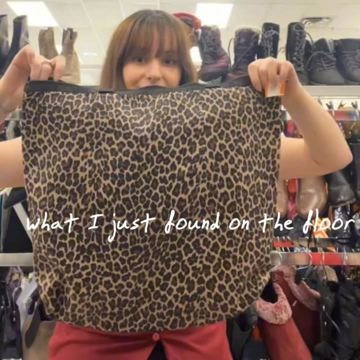
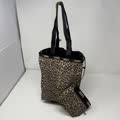
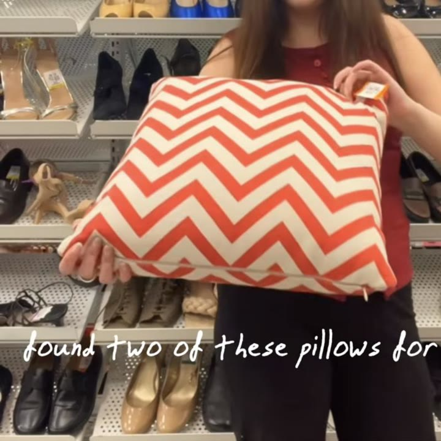
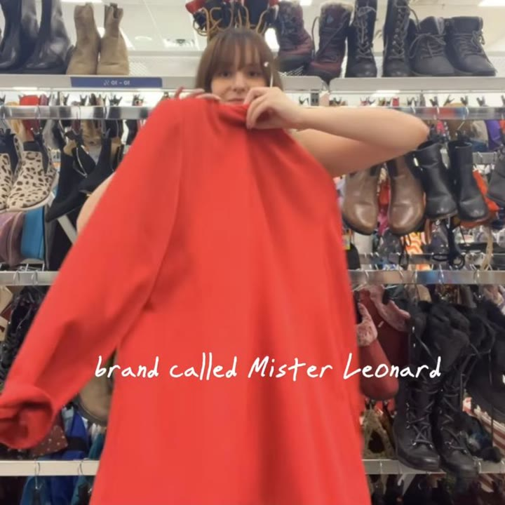
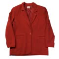
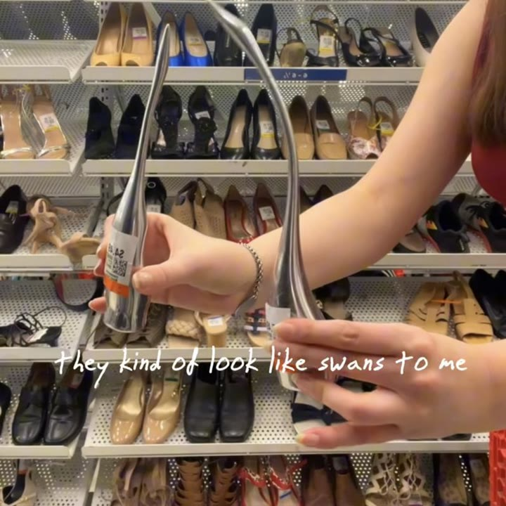
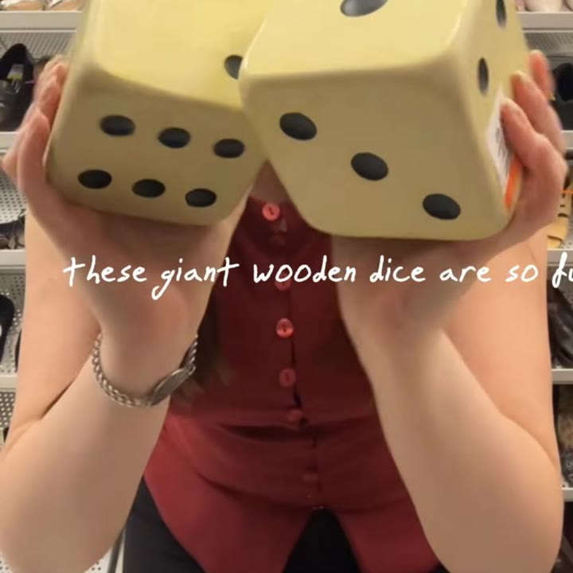
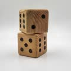
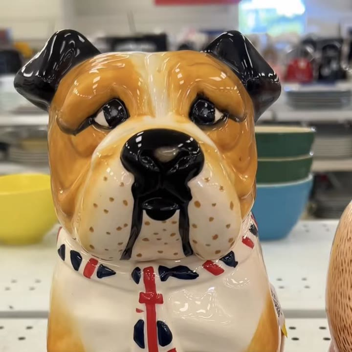

Vintage LeSportsac leopard print tote bag
Found it on the floor. $3.99, and $1 in savings made it $2.99.

Similar on eBay →C$42.51The mission was an oversized animal print bag for fall, and a vintage LeSportsac cheetah tote turned up on the floor for $3.99, then $2.99 with my savings. Along the way: an AMBUSH tank, a baby blue Lacoste dress, a Mister Leonard blazer, a BCBG ruffle dress with tags and a $15 trench coat, all left behind.
Thrifted pieces are one of a kind, so these are the closest matches I could find, resale and new. Some links are affiliate links, and I may earn a small commission at no cost to you.

Found it on the floor. $3.99, and $1 in savings made it $2.99.

Similar on eBay →C$42.51
The person I'm thrifting with found two of these for eight bucks.
 Similar on Etsy →C$18.00
Similar on Etsy →C$18.00
A vintage Canadian brand, usually really affordable at the thrift store.

Similar on eBay →C$41.20
I put the MCM ducks back in their home.
Similar on Etsy →C$75.00
Good for so many things, except actually playing with them.

Similar on Etsy →C$59.34
A British cookie jar, very cute.
Similar on Etsy →C$65.00I have a budget of $133 left to thrift this fall. Recently we thrifted these black and red heels for the diabolical price of $30. And today we want to find an oversized animal print bag. Let's go to the thrift store.
Starting strong with the $100 Mango flat. These are priced at $12.99 at the thrift store. And though I do love a ballet flat, I'm not big on gold. I tend to have more silver. So even though these are cute, let's leave them behind for someone else.
And if you thought the blue cowboy boots were surprising, boy do I have a surprise for you. Because not only is there blue, in a smaller size there's a matching pink. These would be so good for friends or a couple for Halloween.
But you will not believe what I just found on the floor. A vintage LeSportsac. Massive cheetah print bag. For such a good price, it's only $3.99. Something else caught my eye. Let's put it in our cart and keep shopping.
These make me super excited. And I kind of really like the style with the pom-poms on the front. These are also in pretty good shape and I wonder how old they are. Unfortunately, I did try them on and they do not fit me. So that is a bummer because I really do like them.
I am so excited to find this. This is a vintage Canadian brand called Mister Leonard. And they make some really cute, really high quality pieces including great suitings. And since it's not a hugely recognized brand, I find that the pieces are usually really affordable at the thrift store. So fingers crossed that this is going to be amazing. I am disappointed.
Now if you think the front of the shirt is fun, wait till you see the back, specifically the sleeves. Oh my goodness, this is wonderful. I love it when manufacturers and designers actually take the full fringe down the arm and don't just stop it on the back. Like look at that. Those are so cool.
It didn't go too well. But yeah, this is a great piece. It definitely doesn't belong in my wardrobe. But this is gonna be so cool for someone.
This is a tank top from a designer brand called Ambush. I think they're sold on SSENSE. For example, this tank top on Farfetch is $521, which is so much for a top. But I don't love the grey paneling and the yellow text for my wardrobe. I think it's just not my style. So we are going to leave it behind.
But I love a fringe. This is so cute. It shakes so well. And to a great heartbreak, it is definitely not in my size. Oh, but there we go. It can even go hands-free. What can't it do?
Such a gorgeous vintage leather pencil skirt. Unfortunately, I would have to remove bones to make this fit. I think this is really cute, but I don't love the shade of denim on me. I really like the shape of this dress, but it's going to be a no.
Now this could have been kind of fun in the summer. This is a vintage baby blue Lacoste. But unfortunately, the store did recognize the brand. So it's almost $20. So I am going to say no. I do think it's cute.
And oh my goodness, this is not my personal style, but it could be. And maybe I should try something new. Wait, did it come with this panel missing in the front like that? Or is that like a DIY? Only one way to find out. I do like that this is kind of an interesting patchwork. Maybe it's time to try something.
Oh, what is up with that missing cutout in the front? It could actually just be such a cozy shirt to throw on and do errands around the house, or painting and cleaning. Still having a fun pattern, but I don't think I personally dig the cutouts because I don't understand their purpose. But from the back, this is actually pretty cute. So I'm a bit disappointed in the front. Oh well, on to the next thing we go.
Now this is only priced at $15. I think this could be very exciting. I really like that trench coats are making a comeback recently. I found this in the men's section because I'm looking for a more baggy oversized look. Here, I adjusted the camera so you can see a bit better.
So pros are I really like the cutout shape on the back. Don't look at my bad haircut. And the buttons are super cool, but I just don't feel a spark with it. I think because the arms are a bit big in the shoulders. I'm not sure if this is one of those pieces that if I leave it behind, I may regret it. So cross your fingers for me because I am going to leave it behind. Did I make the right decision? Please say yes.
This is a $108 Gap skirt with the tags on. In general, I find Gap to be quite expensive. And even though it has the price tags on, I don't love these silky skirts. I don't find them to be flattering on me.
Wow, this is a colour combination you don't see every day, and look at that beautiful orange lining. So I could take the shoulder pads out. It's kind of interesting, or maybe not. Vintage Nike tear-aways, except I am too tall for these. That's sad.
The person I'm thrifting with found two of these pillows for eight bucks. They're going to get them. Oh, look at these little mid-century sculptures. I think these are swans. They kind of look like swans to me. What do you think?
Oh my goodness, these giant wooden dice are so fun. I think they might be bookends. Realistically, they could be used for so many things, except actually playing with them, I think. Halloween at the thrift store might be my favourite season. Look at these adorable candlesticks, and I found the matching witch ones.
Darn, this is really cute, but it's $30, so I don't think I dare even try it on because we just spent $30 the other day. A British cookie jar, very cute. There are a set of these matching cups. I really like how shiny they are.
What are these? I feel like they're to carry wine bottles maybe, but there's so many. I don't really drink that much, so someone else with some insight should tell me, because there were like 10 of these all around the store today.
This mug is so cute. Why does it have a huge logo on it? Speaking of big logos, these two vintage folding chairs are so cute and they're priced at $5.95 each, at such a good price. I like these kind of deep earth tones that are in the lamp section today.
But now it is time to make some decisions. First decision is this $3.99 LeSportsac bag. I think this is so cute, and something I really like about it is that it can roll up super duper small, so I can use this for carrying groceries, traveling with clothes. I think they would let me take this as a personal item on a plane.
And there's a twist, it gets even crazier. So when I got to the cash to buy this for $3.99, which is already such a good deal because people are selling these online for over $100, I had $1 in savings, which meant instead of $3.99 this bag becomes $2.99. You cannot even get a coffee for that much anymore. And I feel like this is making up for some of the money I spent on this pair of heels, which I still cannot believe cost me $30.
Oh, and I forgot to tell you, I did check if the Miu Miu platforms that we found for $18 were still there, because I think the general consensus in the comments was that they are indeed real. I thought, oh, this could be a really fun giveaway, but I could not find them.
Next are the colourful cowboy boots. I actually really like these. Unfortunately, neither of these are in my size.
I am thinking of doing a Halloween thrifting series where we find kind of the most outrageous item we can find at the thrift store and have to build a costume around it. On a budget of maybe like $25. I would like to do $20, but I feel like the thrift store prices are going up quite a bit, so I think $25 or $30 would be more reasonable.
Also, I forgot to show you, I found this snake print tote bag with this bright pink lining. I like the lining, but I definitely prefer the cheetah print, so I think we are going to leave this behind. I was a little bit on the fence about the Ambush tank, but I think ultimately I don't need it, plus it wasn't on our vision board.
If this skirt had fit me, it actually would be a contender today, but it does not. 100% I would have bought this skirt if it was in my size. I don't think I could style this the way it deserves to be, so I'm leaving this for someone else to thrift. Really good quality though. I absolutely love this top. It is so fun. It's not for my wardrobe, but it's just fantastic.
And on my way out the store, I also found this vintage BCBG dress. It's quite beautiful. Like look at the ruffles. I love that they go on the back, and it has the tags on. Absolutely gorgeous. Unfortunately, it was just a bit too big for me and I don't need it right now.
Texted my friends to see if any of them wanted this dress, but we're all just in fall mode now. And I decided to put the MCM ducks back in their home. They're pretty cute though. Which means that all I purchased today was this $2.99 leopard print bag.
Now I want to get serious about Halloween with you for a second. Can you guys help me decide? Would you rather me just find like the most absurd item that we can find in the thrift store and then I have to build a costume around that? Or should I do what I normally do, which is I go in with the idea for a costume and then we try and thrift it on a budget of like $20 to $25?
I think it could be kind of fun to switch it up and try something new with like an absurd costume based on an absurd piece, because I think the Halloween costumes are going to come out soon, and some of the vintage costumes that you can find at the thrift store are really, really good.
So I'm a little stumped on what to do. And in terms of budget for it, I like to do it for $20, but I do feel like prices have been inflated quite a bit recently, so I might do $30. But is that just too high? I feel conflicted overall, so I would love your feedback.
And once again, this is my new longer format video. And you guys sent the nicest comments, which I so appreciate, because these videos take a little bit more time to edit. Thank you so much for the positive thoughts, and I think we're going to continue making these, which is really fun and exciting.
Overall, that means so far we have spent 70% of our budget for fall already. And remember, you can catch up on all the other episodes so far on this channel, and if you like these videos, I really appreciate you subscribing so we can hang out more. Also, B says hi. Talk to you soon.